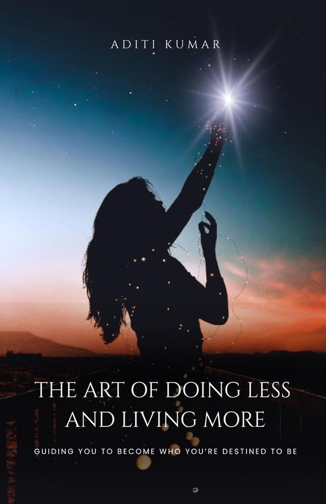

Modern life tells us that doing more will make us feel fulfilled.
Instead it has left so many of us burnt out, overwhelmed, anxious, and disconnected from who we truly are. If you’re exhausted from constantly pushing, or stuck in cycles of stress and overthinking, this book offers a different path.
Aditi draws on neuroscience, psychology, mindfulness and spirituality to show how your nervous system, subconscious beliefs and emotional patterns keep you stuck in survival mode, and how to come back to yourself.
Inside, you’ll learn how to
- Regulate your nervous system and feel calm, safe, and grounded
- Break free from survival mode, overthinking, and people-pleasing patterns
- Navigate heartbreak, loss, and life transitions with awareness
- Let go of hustle culture and create a slower, more aligned life
“At the heart of this book is The Return Method, a simple and powerful framework for self healing, personal growth, and lasting transformation.”From Aditi’s description of The Art of Doing Less and Living More
13 to 15 November 2026
Return To Self, a women’s circle
At the MindBodySpirit Festival in Melbourne, Aditi invited women to a free circle at 5pm daily in the ceremony space at the Convention and Exhibition Centre, with book signings afterwards.
Aditi Kumar
Author, speaker and facilitator. On Instagram she writes about burnout, identity and returning to yourself.
The life you are searching for is not found in doing more.
Buy the book